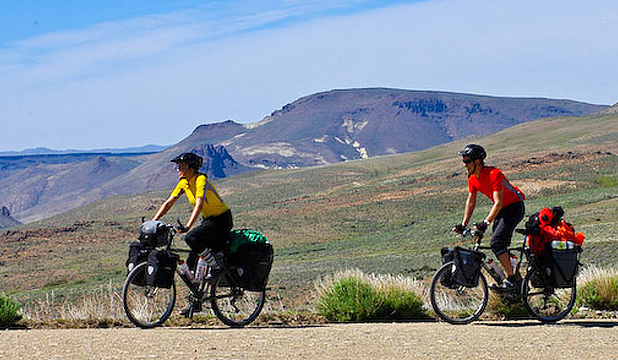

Amistades internacionales
Disfrutando la vida de forma diferente
El cicloturismo de alforjas es el ciclismo a largas distancias, una actividad recreativa y no competitiva que combina la actividad física y el turismo. Consiste en viajar en bicicleta visitando los lugares que se encuentra uno a su paso. Se realiza por placer, no por competición, por lo que no se puede llegar a denominar práctica competitiva. Se pueden hacer viajes de cualquier duración, tanto en el día como de varias semanas, meses o años. Una persona en razonable forma física y con una bicicleta cargada de equipaje, puede recorrer entre 50 y 150 km por día, dependiendo del tipo de terreno, por lo que se pueden cubrir distancias considerables en unos pocos días.
Tipos de bicicletas
